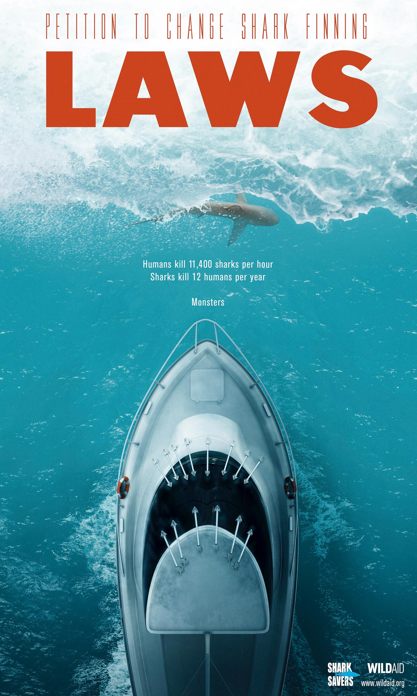
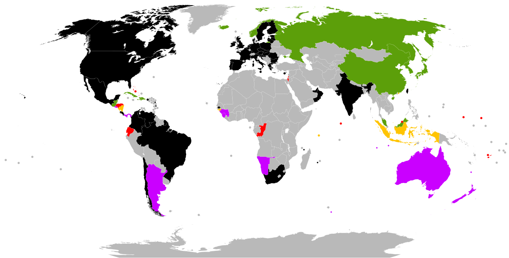
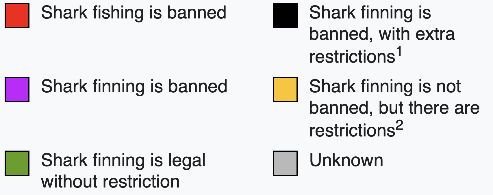
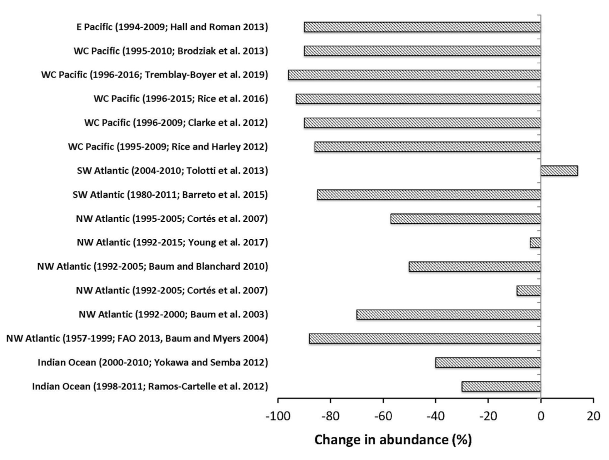
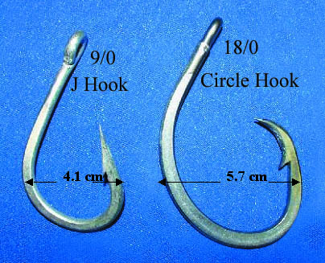
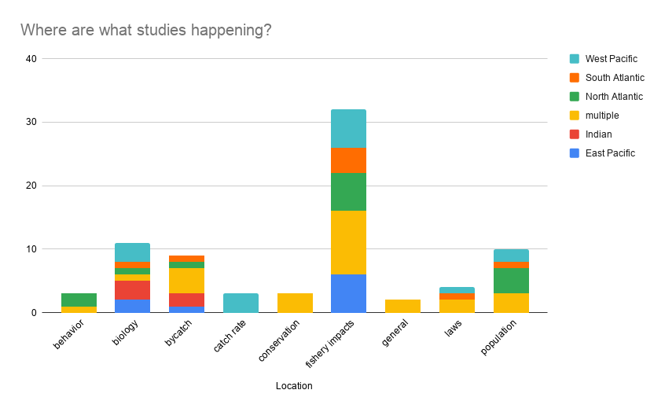
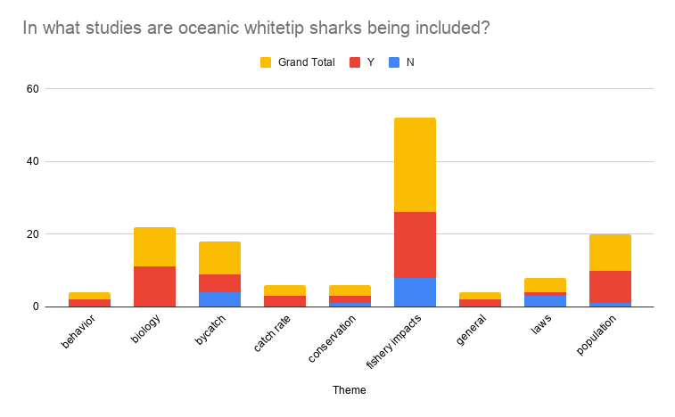
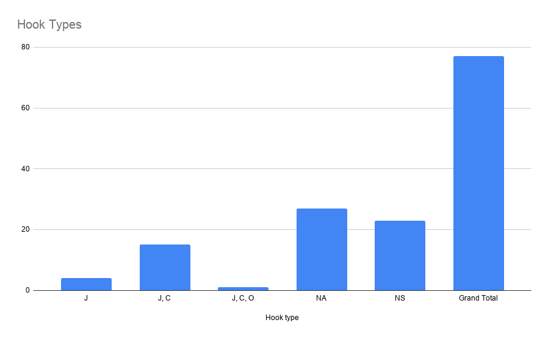
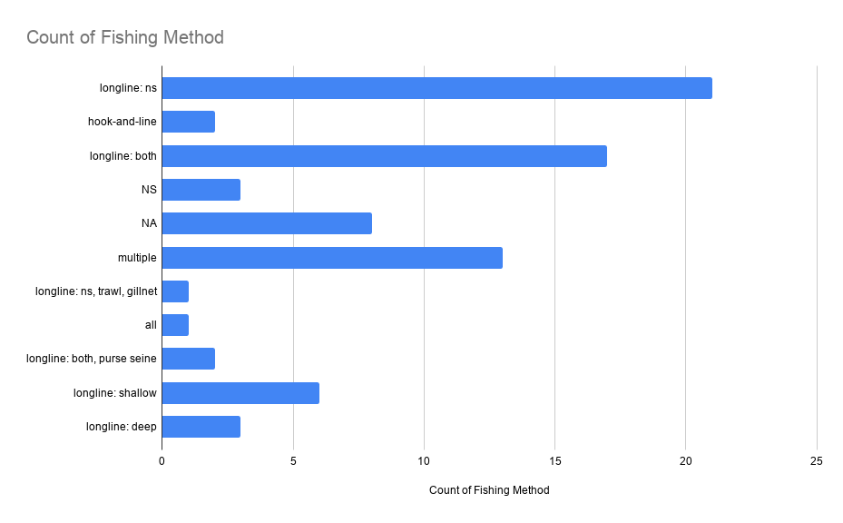
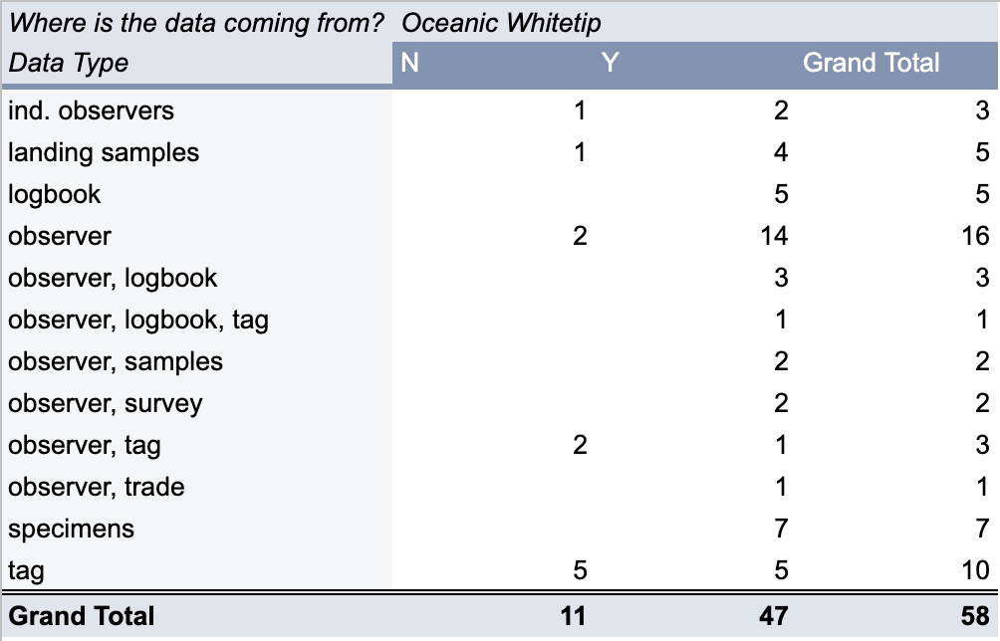

Pelagic sharks are open ocean sharks, distributed globally in Earth's oceans. They like warm waters. They migrate. They are the top, apex predators.
Their abundance determines the health of our oceans. If they disappear, the oceans become out of balance, and we suffer too.
There are 53 pelagic shark species and 20 of them are threathed with extinction.
These sharks are vulnerable due to fishing pressures. They are slow to mature, slow to reproduce and do not produce many young.
Modern fishing methods, such as the use of longlines, have devastated shark populations world-wide.
They can be the target catch, but most of the time they are caught incidentally by commercial tuna fisheries.
Regional Fisheries Management Organizations (RFMO) is an international body dedicated to the sustainable management of fisheries.
They collect fisheries statistics, assess resources and monitor activities. Given data, they issue mandates.
However not all countries participate. Also, enforcing management measures is challenging.



Wikipedia
Once an abundant species, the oceanic whitetip shark has suffered substatial population decline. Now considered critically endangered by th IUCN.
They live in the top layer of the open ocean and are distributed globally between 30$^{\circ}$ North and 35$^{\circ}$ South.
They can travel great distances, but seem philopatric.
They are caught incidentally by tuna fisheries, purposefully for their fins, or simply killed as they can cause damage to fishing equipment.

Young et al 2020Hooks can have different shapes and be either corrodible or stainless steel.

Gangion lengths and types, monofilament versus wire, can be consired.
Web of Science search yielded 43 articles. 38 were relevant and 39 were further identified from citations.
TS=(((oceanic AND whitetip) OR (Carcharhinus AND longimanus)) AND (fisheries OR overfishing OR longline OR bycatch))





Conservation is as much about policy as it is about science.
Shark conservation relies on our ability as a people to understand how to utilize our planet's resources in a sustainable fashion.